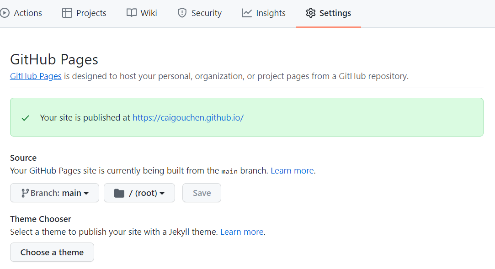
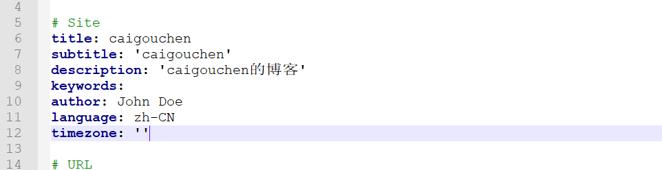
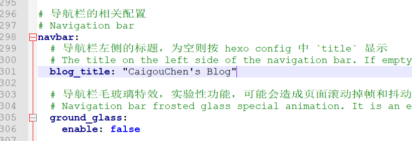
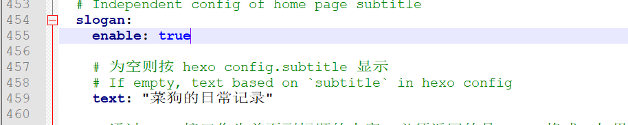
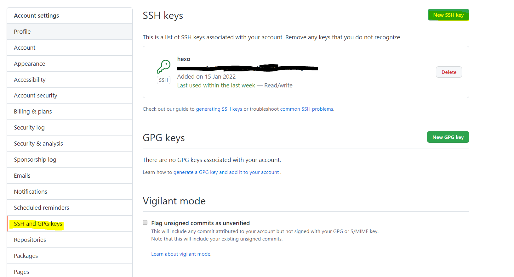
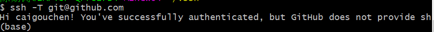

#choose a theme可以选择github pages自带的主题，source选择main，然后save。访问https://用户名.github.io/应该可以看到基础的界面，成功了是绿色

2、使用hexo使博客更加好看(windows系统下)
1 2 3 4 5 6 7 8 9 10 11
#安装nodejs好后，打开nodejs npm install -g hexo-cli #安装hexo #切换到cmd中，进入到你希望博客安装位置 hexo init x #创建一个hexo项目 cd x npm install #本地启动 hexo g hexo server #浏览器访问 http://localhost:4000，可以看到hexo的默认界面 #本地则会出现如下界面
hexo new page about #创建成功后，编辑博客目录下 /source/about/index.md，添加 layout 属性。 ''' --- title: about date: 2022-01-16 15:15:39 layout: about --- ''' hexo g -d #更新 hexo s #浏览器访问 http://localhost:4000，可以修改后的主题
创建测试文章
1 2 3 4 5 6
#修改_config.yml post_asset_folder: true #在生成文章的时候生成一个同名的资源目录用于存放图片文件。 hexo new post #测试文章执行完成后在source\_posts目录下生成了一个md文件和一个同名的资源目录 #本地启动 hexo g -d hexo s
个性化展示
1
#浏览器tab页名称：修改根目录下_config.yml中的title字段，如图

1
#博客标题：主题目录themes\fluid下_config.yml中的blog_title字段。

1
#主页正中间的文字：主题目录 themes\fluid下的_config.yml中的text字段。

1
#更多详见https://hexo.fluid-dev.com/docs/start/
4、git联通github
1 2 3 4 5 6 7 8
cd ~/.ssh #x代表你申请github时的用户名，y代表申请github时的邮箱 git config --global user.name "x" git config --global user.email "y" ssh-keygen -t rsa -C "y" ls #应该出现这两个文件id_rsa id_rsa.pub cat id_rsa.pub #复制里面的东西 #到github中点头像选settings---SSH and GPG keys---New SSH key---新建名字随便，将上边的秘钥复制

1 2 3
#测试连通性 ssh -T git@github.com #出现以下即成功

5、部署到github上
1 2 3 4
#安装hexo-deployer-git npm install hexo-deployer-git --save #根目录修改_config.yml hexo g -d